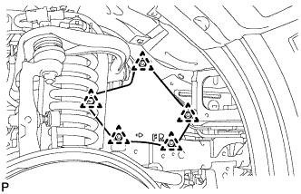
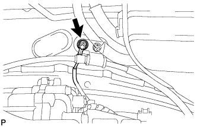
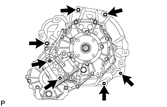

АВТОМАТИЧЕСКАЯ ТРАНСМИССИЯ В СБОРЕ > СНЯТИЕ |
| 1. ОТСОЕДИНИТЕ ПРОВОД ОТ ОТРИЦАТЕЛЬНОГО ВЫВОДА АККУМУЛЯТОРНОЙ БАТАРЕИ |
| 2. СНИМИТЕ ЗАЩИТУ КАРТЕРА ДВИГАТЕЛЯ № 1 В СБОРЕ |
 |
Выверните 4 болта.
Отсоедините защиту картера двигателя от кузова автомобиля, как показано на рисунке.
| 3. СНИМИТЕ ЗАДНЮЮ ЗАЩИТУ КАРТЕРА ДВИГАТЕЛЯ В СБОРЕ |
Выверните 4 болта и снимите заднюю защиту картера двигателя.
| 4. СНИМИТЕ УПЛОТНЕНИЕ ФАРТУКА ПРАВОГО ПЕРЕДНЕГО КРЫЛА |
|  |
Освободите 5 фиксаторов и снимите уплотнение фартука переднего крыла.
| 5. СНИМИТЕ УПЛОТНЕНИЕ № 1 МЕЖДУ ФАРТУКОМ ПРАВОГО ПЕРЕДНЕГО КРЫЛА И РАМОЙ |
 |
Освободите 5 фиксаторов и снимите уплотнение между фартуком переднего крыла и рамой.
| 6. СНИМИТЕ ПРИЕМНУЮ ТРУБУ В СБОРЕ |
Снимите приемную трубу (Нажмите здесь).
| 7. СНИМИТЕ НИЖНИЙ ЗАЩИТНЫЙ КОЖУХ КАРТЕРА РАЗДАТОЧНОЙ КОРОБКИ |
Выверните 4 болта и снимите защитный элемент.
| 8. СНИМИТЕ ПЕРЕДНИЙ КАРДАННЫЙ ВАЛ В СБОРЕ |
Снимите передний карданный вал (Нажмите здесь).
| 9. СНИМИТЕ КАРДАННЫЙ ВАЛ В СБОРЕ |
Снимите карданный вал (Нажмите здесь).
| 10. СЛЕЙТЕ ЖИДКОСТЬ ДЛЯ АВТОМАТИЧЕСКОЙ ТРАНСМИССИИ |
Снимите пробку сливного отверстия и прокладку, и слейте трансмиссионную жидкость.
Установите новую прокладку и пробку сливного отверстия.
| 11. СНИМИТЕ ПАТРУБОК МАСЛОНАЛИВНОЙ ГОРЛОВИНЫ ТРАНСМИССИИ В СБОРЕ |
 |
Снимите щуп проверки уровня масла в трансмиссии.
Отверните 2 болта и снимите маслозаливной патрубок.
Снимите кольцевое уплотнение с маслозаливного патрубка.
| 12. ОТСОЕДИНИТЕ ВПУСКНОЙ ПАТРУБОК МАСЛЯНОГО РАДИАТОРА № 1 И ВЫПУСКНОЙ ПАТРУБОК МАСЛЯНОГО РАДИАТОРА № 1 |
 |
Выверните 3 болта, чтобы разомкнуть 2 зажима патрубков масляного радиатора № 2.
С помощью разрезной головки отсоедините впускной и выпускной патрубки.
| 13. ОТСОЕДИНИТЕ ТРОС МЕХАНИЗМА ПЕРЕКЛЮЧЕНИЯ ПЕРЕДАЧ В СБОРЕ |
 |
Отверните гайку, снимите фиксатор и отсоедините трос механизма переключения передач.
| 14. СНИМИТЕ СТАРТЕР В СБОРЕ |
Для моделей мощностью 1,4 кВт:
Снимите стартер (Нажмите здесь).
Для моделей мощностью 2,0 кВт:
Снимите стартер (Нажмите здесь).
| 15. ПОДДОМКРАТЬТЕ АВТОМАТИЧЕСКУЮ ТРАНСМИССИЮ В СБОРЕ |
Поддомкратьте трансмиссию телескопическим гидравлическим домкратом.
| 16. СНИМИТЕ ЛЕВЫЙ И ПРАВЫЙ КРОНШТЕЙНЫ ЭЛЕМЕНТА ПЕРЕДНЕЙ ПОДВЕСКИ |
 |
Выверните 8 болтов и снимите левый и правый кронштейны элемента передней подвески.
| 17. СНИМИТЕ ПОПЕРЕЧИНУ РАМЫ № 3 В СБОРЕ |
Выверните 4 болта из подушки задней опоры двигателя.
Отверните 4 гайки и снимите 4 болта и поперечину рамы.
| 18. СНИМИТЕ ЗАДНЮЮ ПОДУШКУ ОПОРЫ ДВИГАТЕЛЯ № 1 |
Выверните болт и снимите теплозащитный экран задней опоры двигателя
Выверните 4 болта и снимите подушку опоры двигателя с трансмиссии.
| 19. ОТСОЕДИНИТЕ ЖГУТ ПРОВОДОВ И РАЗЪЕМ |
|  |
Отверните гайку и отсоедините провод соединения с массой.
Наклоните трансмиссию вниз.
Отсоедините разъем датчика положения паркинга/нейтрали, разъем жгута электропроводки трансмиссии, 2 разъема датчиков частоты вращения и боковой разъем системы управления раздаточной коробкой.
Освободите зажим разъема и 5 зажимов жгута проводов и отсоедините жгут проводов.
| 20. ОТСОЕДИНИТЕ ШЛАНГ САПУНА |
 |
Отсоедините 2 шланга сапуна раздаточной коробки от двигателя.
| 21. СНИМИТЕ УСТАНОВОЧНЫЙ БОЛТ МУФТЫ ГИДРОТРАНСФОРМАТОРА И ВЕДУЩЕГО ДИСКА |
Снимите пылезащитное уплотнение картера маховика.
 |
Проверните коленчатый вал, чтобы обеспечить доступ к 6 болтам, и, удерживая ключом болт шкива коленчатого вала, выверните каждый из болтов.
| 22. СНИМИТЕ АВТОМАТИЧЕСКУЮ ТРАНСМИССИЮ В СБОРЕ |
 |
Выверните 3 болта и снимите опору выпускного коллектора.
|  |
Выверните 7 болтов и снимите трансмиссию.
| 23. СНИМИТЕ КРОНШТЕЙН ТРОСА МЕХАНИЗМА ПЕРЕКЛЮЧЕНИЯ ПЕРЕДАЧ № 1 |
 |
Выверните 2 болта и снимите кронштейн троса механизма переключения с трансмиссии.
| 24. СНИМИТЕ РАЗДАТОЧНУЮ КОРОБКУ В СБОРЕ |
Снимите раздаточную коробку (Нажмите здесь).
| 25. СНИМИТЕ МУФТУ ГИДРОТРАНСФОРМАТОРА В СБОРЕ |